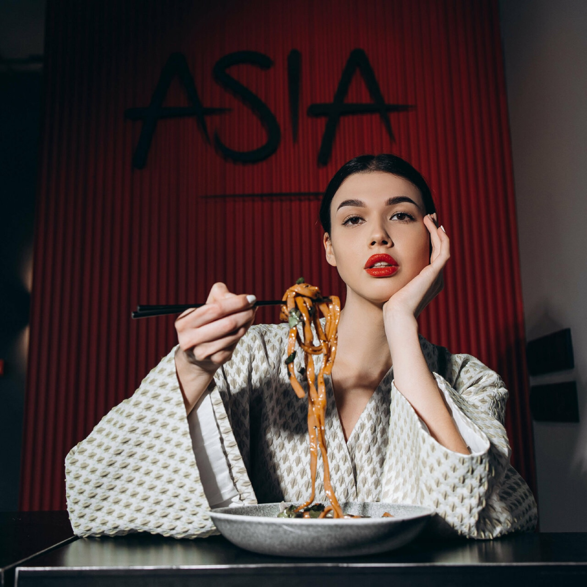
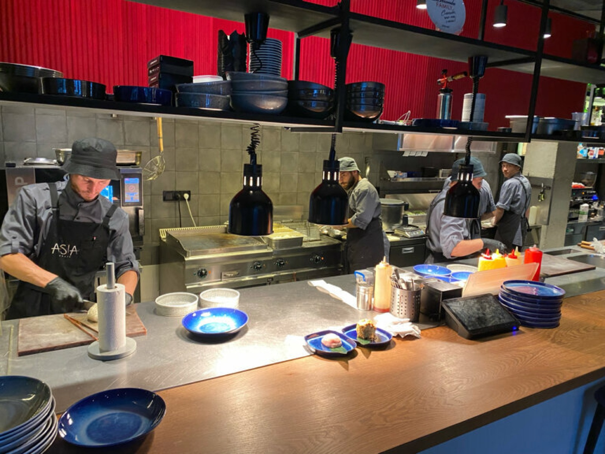
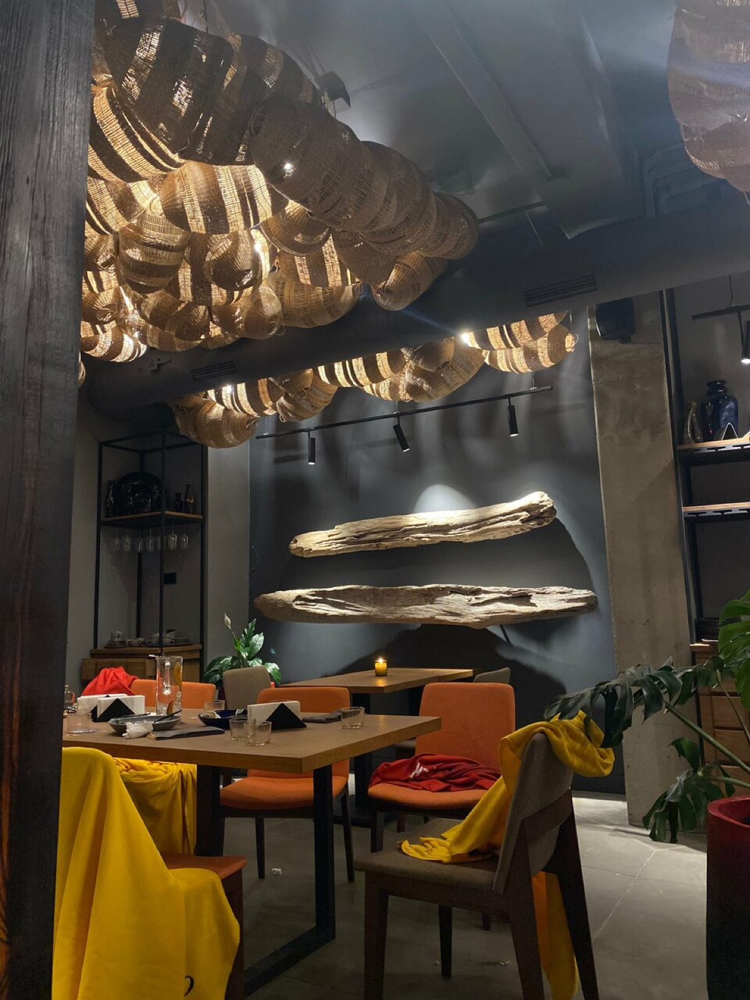
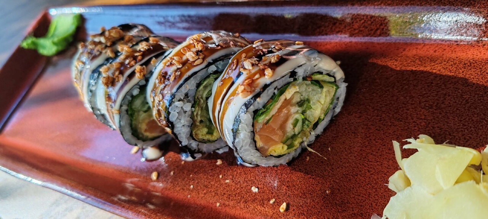
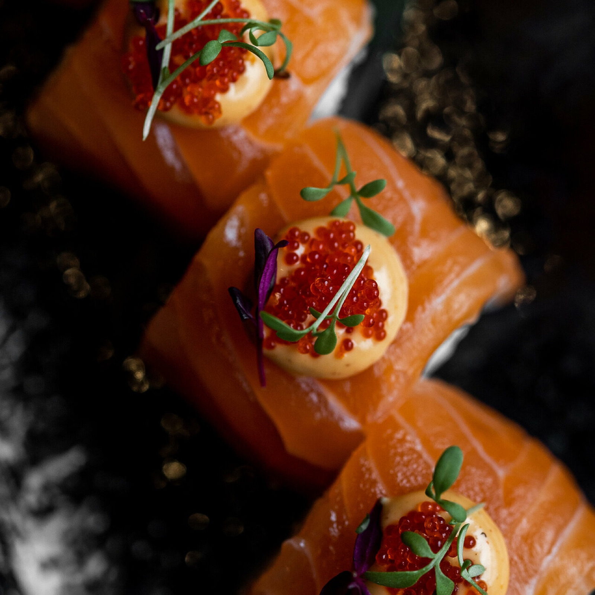

«Азия рядом» — это паназиатская кухня в центре Анапы: японские суши и сашими, тайский том-ям, китайские дим-самы и вок на живом огне. Одно меню — целый континент вкусов.
Название — это обещание. Не нужен перелёт, чтобы поесть рамен как в Токио или том-ям как в Бангкоке: Азия действительно рядом — за углом, на улице Ленина.


Кухня стоит прямо в зале: повара крутят роллы, вспыхивает вок, поднимается пар над дим-самами. Нам нечего скрывать — наоборот, это главное шоу ресторана.
Интерьер придуман как современная Азия: глубокие красные стены, дизайнерские люстры-ракушки, тёплый свет ламп. На столах — фирменные чёрные меню с каллиграфией ASIA, а навынос блюда уезжают в узнаваемой упаковке.
Получилось место, где хочется задержаться: гости фотографируют зал так же часто, как и еду.


